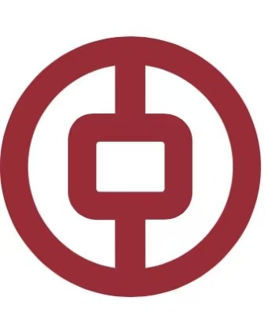

01
PRACTICE FIRST

中国银行益阳分行BANK OF CHINA · YIYANG BRANCH青年政绩观BOC YOUTH 政绩观主题专栏
树立和践行正确政绩观，是青年履职尽责的必修课。立足金融本职重实干、求实效， 把工作实绩落到服务发展、服务客户的具体行动之中。
PRACTICE IN ACTION · 01
树立和践行正确政绩观，是青年履职尽责的必修课。
本栏目聚焦青年对政绩观的学习感悟与岗位实践思考，引导青年摒弃虚功虚绩，坚持求真务实， 以党性立身做事，把工作实绩落到服务发展、服务客户的具体行动之中。
KNOWLEDGE TO PRACTICE · 02
把正确政绩观落到每一次客户服务、每一笔业务办理和每一项风险防控中。
PRACTICE FIRST
FINANCE FOR PEOPLE
STABLE & COMPLIANT
LONG-TERM VALUE
YOUTH PRACTICE · 03
12 位青年 · 12 份思考 · 把实绩写在岗位上
中国银行益阳市桥北支行·行长
01 PRACTICE NOTES / 岗位感悟
作为基层支行青年干部，我深知正确的业绩观，不是追逐短期数据、表面亮点，而是把心放在基层、把事干在实处。基层是干事练兵的一线阵地，我将摒弃急功近利、贪慕虚功的心态，立足岗位深耕一线，扎实做好每一项业务、服务好每一位客户。坚持久久为功，创造经得起检验的实绩，充分展现中行基层青年实干担当的时代风貌。
YOUTH IN PRACTICE · 向实而行
心中有责任，脚下有行动。
以实干立身、以实绩作答，在金融服务一线书写青春答卷。